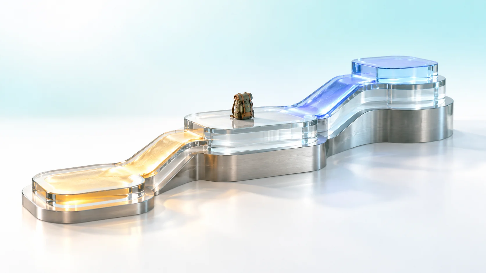
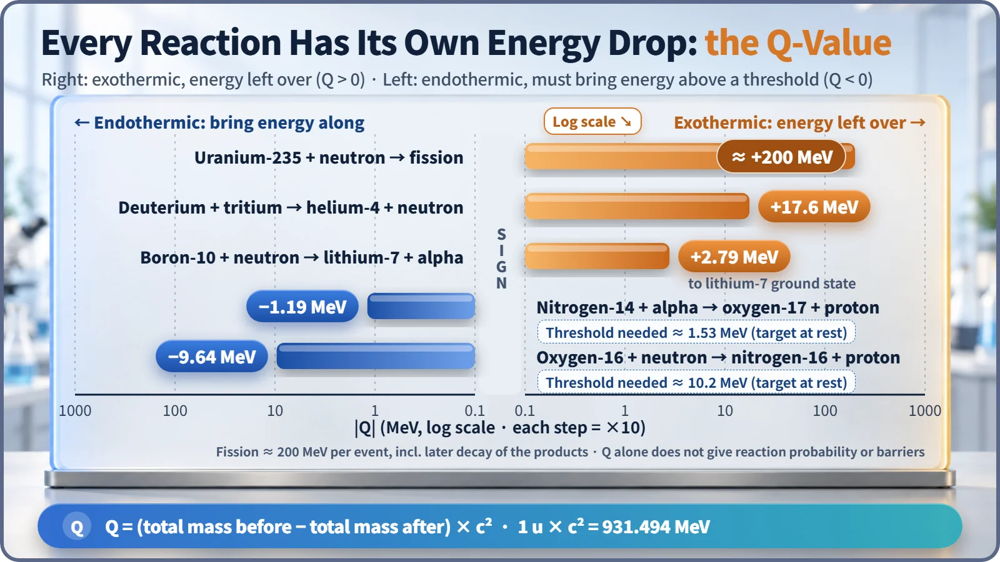
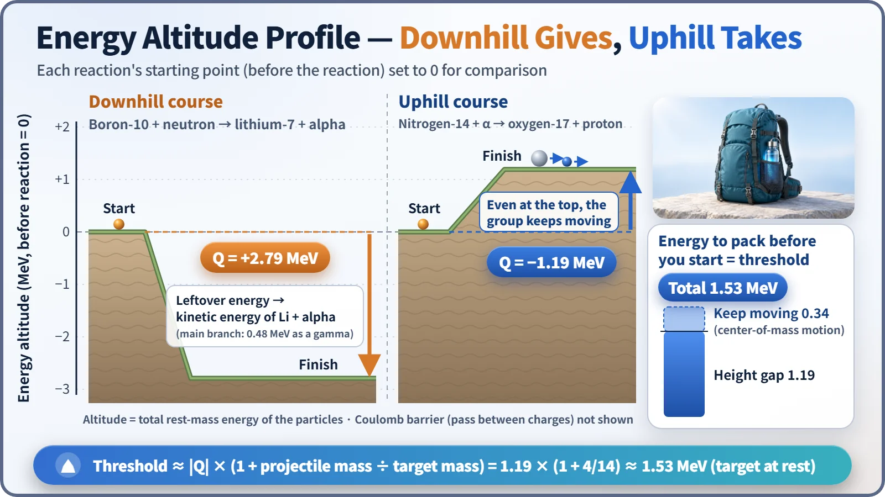

Nuclear Reactions & Fission · 047
Downhill Gives, Uphill Takes — What a Nuclear Reaction's Q-Value Tells You
Lose mass and energy is left over; gain mass and the incoming particle must bring more than the height gap.

The Q-value is the mass lost or gained in a nuclear reaction, written as energy. If the products weigh less than what went in, Q is positive and energy is released (exothermic). If they weigh more, Q is negative and the incoming particle must bring at least a threshold energy (endothermic). [1]
1919: the day nitrogen turned into oxygen
In 1919, Ernest Rutherford was firing alpha particles (helium nuclei) into nitrogen gas when he noticed something odd: protons were flying out where there should have been none. Nitrogen-14 had swallowed an alpha particle, spat out a proton and turned into oxygen-17. It was the first artificial nuclear transmutation.
Far from releasing energy, this historic reaction actually takes in 1.19 MeV. Why would a nuclear reaction do that? The single number that answers the question is the Q-value.
Turn a reaction into a hiking trail
Picture a nuclear reaction as a hiking route where "altitude" means the total mass of all the particles taking part. Since mass is energy, a larger total mass means you are standing higher up.
- Downhill route: the start (before the reaction) is higher than the finish (after). The descent leaves energy to spare, and the products carry it away, flying off fast.
- Uphill route: the finish is higher. Before setting off you must pack "hiking stamina," the kinetic energy of the incoming particle.
The Q-value writes that altitude difference down as a number:
Q = (total mass before − total mass after) × c²
In practice you find the mass difference in atomic mass units (u) and multiply by 931.494 MeV per u. Chemical reactions involve roughly eV (electronvolts) per atom; nuclear reactions run about a million times larger, in MeV. [2]
Plus means exothermic, minus means endothermic
A positive Q means downhill: an exothermic reaction. Energy matching the lost mass comes out as kinetic energy of the products and as gamma rays, and in a reactor that kinetic energy ends up as heat.
A negative Q means uphill: an endothermic reaction. Rutherford's nitrogen reaction was one of these, but his alpha particles carried about 7.7 MeV, so a 1.19 MeV climb was no problem.

| Reaction | Q-value | Threshold (target at rest) |
|---|---|---|
| Uranium-235 + neutron → fission | about +200 MeV | none |
| Deuterium + tritium → helium-4 + neutron | +17.6 MeV | none (but a Coulomb barrier) |
| Boron-10 + neutron → lithium-7 + alpha | +2.79 MeV | none |
| Nitrogen-14 + alpha → oxygen-17 + proton | −1.19 MeV | about 1.53 MeV |
| Oxygen-16 + neutron → nitrogen-16 + proton | −9.64 MeV | about 10.2 MeV |
The oxygen-16 reaction happens in the coolant of light-water reactors, when oxygen in the water is struck by a fast neutron. [3]
Why an uphill climb needs more than the height gap
If Q is −1.19 MeV, does the incoming particle only need to bring exactly 1.19 MeV? No. After the collision the products as a whole must keep moving in the same direction, because momentum is conserved. The hiking party still has to keep walking once it reaches the top, so it needs extra stamina for those steps. The minimum energy, the threshold energy, is roughly:
Threshold energy ≈ |Q| × (1 + projectile mass ÷ target mass)
For Rutherford's reaction that's 1.19 × (1 + 4/14) ≈ 1.53 MeV. The oxygen-16 reaction needs about 10.2 MeV.

Where the Q-value goes to work in a reactor
Multiply the number of fissions per second in the core by about 200 MeV per fission and you get the reactor's thermal power. The boron-10 reaction has a positive Q and no threshold, so it can catch even slow thermal neutrons. That is why boron goes into control rods and into the boric acid dissolved in the coolant.
The oxygen-16 reaction has a threshold above 10 MeV, while fission neutrons average about 2 MeV, so it happens only rarely. The small amount of nitrogen-16 that does form decays with a half-life of about 7 seconds, giving off strong gamma rays, and that signal is used to monitor for leaks in steam generator tubes. [3]
What the Q-value doesn't tell you
A large Q-value does not mean a reaction happens easily. Q only tells you how much energy is left over or missing; the probability is set by a separate quantity, the cross section. Deuterium–tritium fusion has a Q of 17.6 MeV, but both nuclei are positively charged and must get over their mutual repulsion (the Coulomb barrier), which takes temperatures above 100 million degrees. Even when the finish is far below the start, there can be a mountain pass on the way.
A negative Q does not make a reaction impossible either. As Rutherford showed, bring enough energy to clear the threshold and you can go uphill.
The idea is not unique to nuclear physics. The heat of reaction in chemistry is the same kind of ledger: burning charcoal is exothermic, an instant cold pack is endothermic. The difference is scale. If chemistry's altitude gaps are neighborhood hills, nuclear reactions are mountain ranges about a million times higher.
Key takeaways
The Q-value is a nuclear reaction's energy altitude gap. Downhill, energy is left over and becomes heat; uphill, you must bring more than the threshold. With that one number you can judge which reactions heat a reactor and which happen only rarely, with fast neutrons.